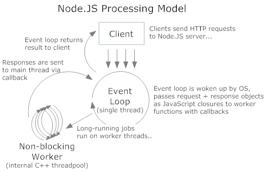
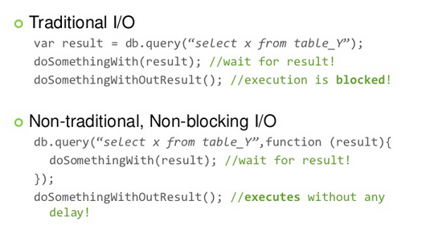

Node.js is a server side platform built on Chrome's V8 javascript engine for easily building fast, scalable network applications. Node.js uses an event-driven, non-blocking I/O model that makes it lightweight and efficient, perfect for data-intensive real-time applications that run across distributed devices.


"But I can do everything I need in: ruby, python, php, java, ... !".
I hear you. And you are right! Node is no freaking unicorn that will come and do your work for you, sorry. It's just a tool, and it probably won't replace your regular tools completely, at least not for now. :: Understanding node.js
"Node.js is only suitable for writing small APIs, not for serious web sites or web applications".
This is bull*hit. I have to say it. :: Part I, Part II, Part III, Part IV, Part V
The Downside of this approach is the use of two separate servers, adds more complexity. Using node.js with django is all about choosing an IPC method to communicate between two separate process, results in unnecisary compexity? I think the best way is simply for each layer to talk to the data base seperatly.
Node itself is just a low-level framework providing functions for sending and receiving HTTP requests and performing other I/O. So when we talk about Node we are generally talking about the ecosystem of technologies built around it.